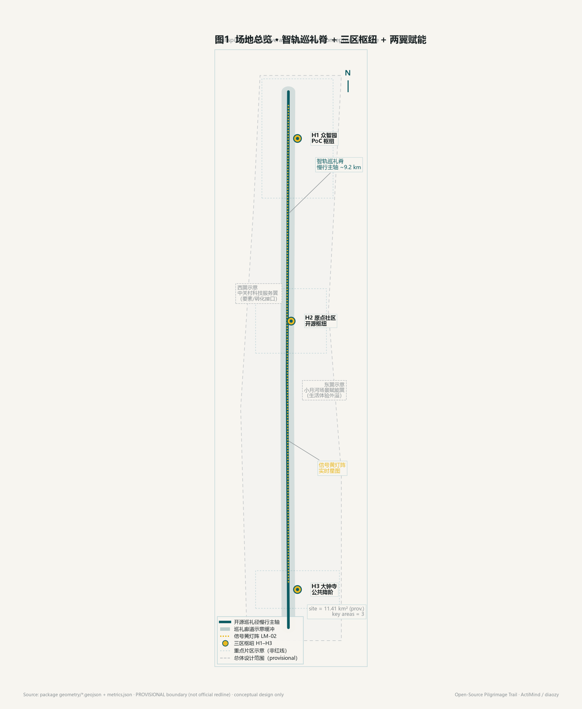
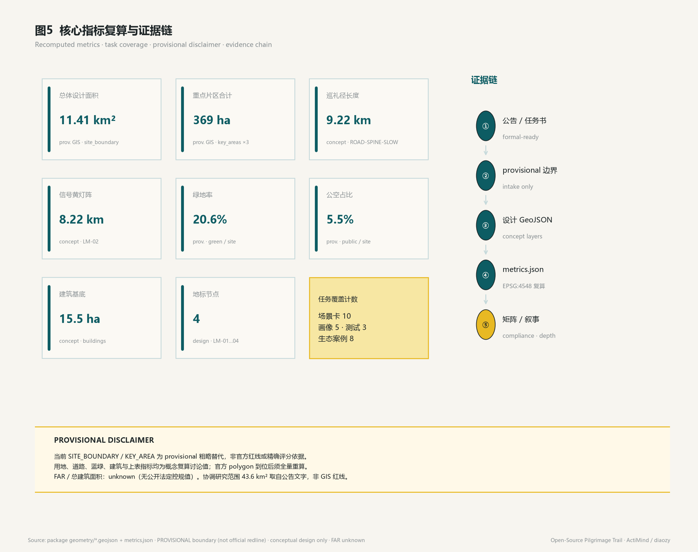
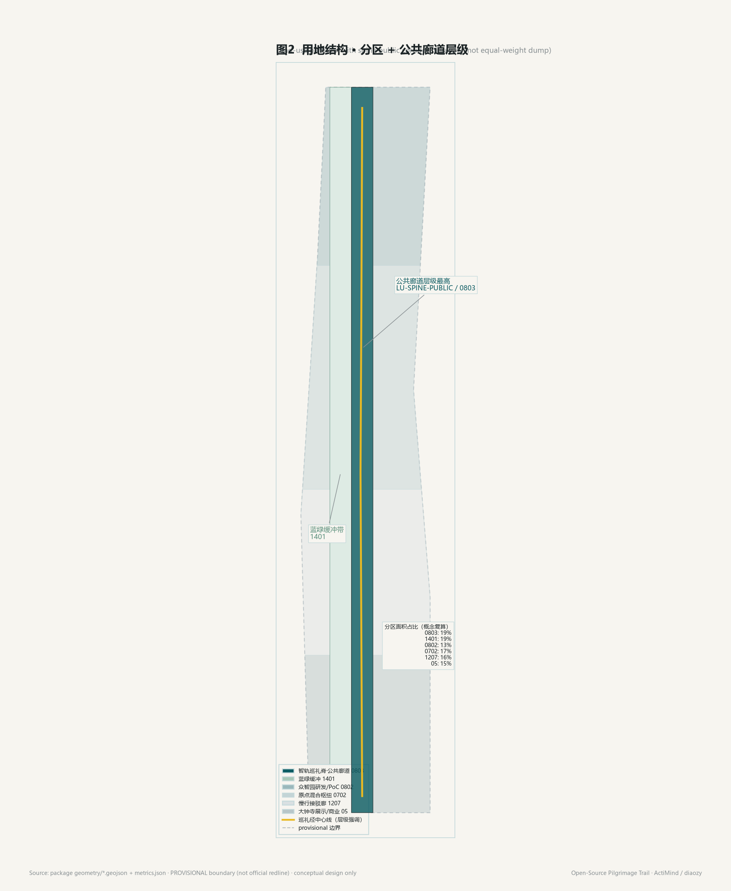
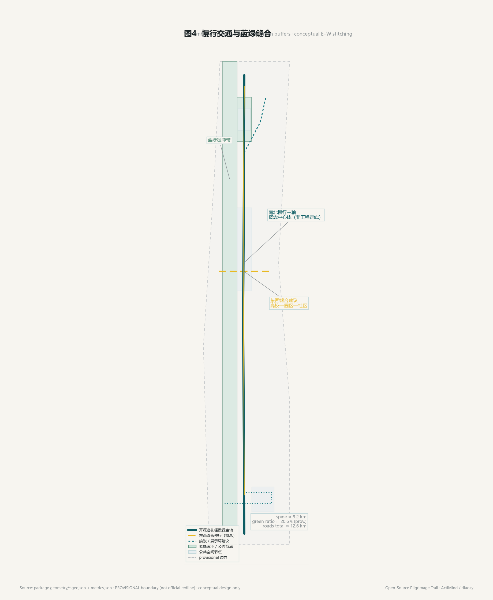
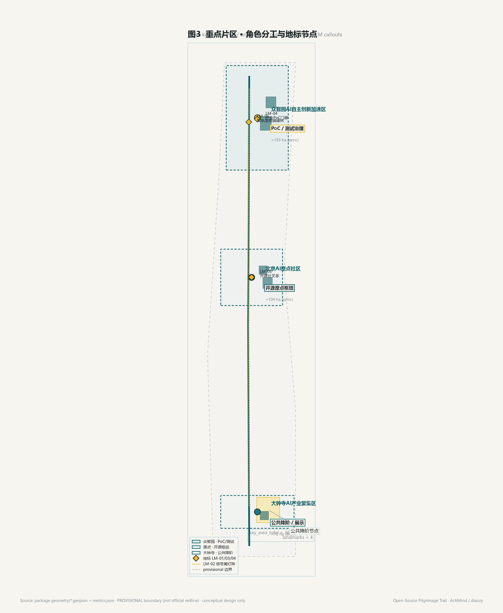

统筹研究范围
43.6 km²（公告文字面积）— 区域协同、创新链与科学城对位。
Centennial Jing-Zhang · Offline Visual Board
沿京张铁路遗址公园线性文脉，构建全球开发者可抵达、可贡献、可被铭记的开源巡礼径；双门槛体验 + 产业 AI PoC 转化回路（概念建议，非控规结论）。
将用地分区、交通慢行、蓝绿公共空间、建筑与更新项目、AI 场景节点叠合到同一证据图；权威数据仍以 GeoJSON / metrics.json / 矩阵为准。

统筹研究 → 总体设计 → 重点详细设计；脊是步行与文化主轴，区是产业/生态引擎，翼是服务外溢。
43.6 km²（公告文字面积）— 区域协同、创新链与科学城对位。
约 11.4 km² — 城市更新深度设计 + 开源朝圣带主廊道（provisional ≈11.41 km²）。
三处 KEY_AREA ≈369.3 ha（provisional）— 众智园 / AI 原点 / 大钟寺精细化落点。
选自 metrics.json 的关键设计量；全部标注 provisional / conceptual，非法定控规值。

用地结构强调 0803 公共廊道层级；慢行脊与蓝绿缓冲共同构成可走、可感的朝圣界面。


三区分工：众智园测试/PoC/治理；原点近校开源枢纽；大钟寺公众降阶与夜间活力。含建筑概念节点与更新项目建议（非拆改留定案）。

约 192.9 ha（provisional）。开源中试廊、产业 AI PoC 中心、治理沙箱、可预约测试界面。
约 104.3 ha。近校开源枢纽、成果廊、人才第三空间、站点一体化概念。
约 72.0 ha。公众降阶互动、商业展演外向、夜间活力与路口四象限连通。
朝圣地标与产业转化节点串联巡礼径；灯阵仅映射公开开源指标，可人工复核，不做隐私追踪。
门廊 / 成果廊 / 荣誉碑刻 / PoC 仪式节点。landmark_count = 4。概念落点，非已建资产。
面向制造业与外企真实业务流的场景沙箱与合规复核入口（概念建议，A-CONCEPTUAL-OPS-002）。
约 8.2 km 概念灯阵（LM-02）；公开 Commit/Star 等指标点亮实体朝圣道，可下线、可复核。
14 张场景卡（SC-01..SC-14）覆盖开源导览、灯阵、PoC 沙箱、共创工坊、翼侧外溢样板与活动路线等；均需数据边界与人工复核说明。
开发者 / 市民双门槛路径导视。
公开指标映射实体灯光阵列。
可预约测试与合规复核界面。
公开数据 + 人工复核识别断点。
可贡献、可被铭记的展示序列。
近校成果转化会客与路演。
无代码体验亭与视觉生成。
多智能体治理与可信评测展示。
铁路文脉 × 中关村 × AI 新文化。
开发者节、开放日与体验路线。
compliance_matrix.json 覆盖公告任务与 Agent 任务书 agent.1–agent.6；下方为可视化摘要，详情见矩阵与 proposal.md。
三层范围、智轨脊、用地/慢行/蓝绿结构。
covered8 对照案例、PoC 转化回路、测试场景。
covered14 场景卡、5 画像、3 产业测试。
coveredLM 地标、灯阵、蓝绿与公共空间指标。
covered文脉段—巡礼径—荣誉段叙事链。
covered活动周、分期 near/mid/far、概念运营。
covered本页不得加载 CDN、远程瓦片、外部字体/脚本或 iframe；证据以本地 sources.json / assumptions.json 为准。
正式依据：资格预审公告、Agent 任务书、site-package、source_registry、本地标准快照。边界来源为 provisional。
控规红线、权属、市政、文保与工程条件待官方确认；运营与设施均为概念建议。
全部空间落地、活动运营、品牌传播与政策机制均为概念建议 / 参考方案 / 可供专业团队深化；不构成控规结论、拆改留定案、工程可行性、投资承诺、已批准活动或政府背书。组织方数据缺口不阻断内容评分，但正式评分面积须待官方 polygon。
self_check_submission.py（--pr-author diaozy）已通过：deterministic · spatial · visual packaging · professional evidence 均为 PASS；package_state=ready_for_review。
检查项：BOUNDARY_TRUST · KEY_AREAS_TRUST · LAND_USE_TOPOLOGY · VISUAL_STATIC · PDF 非空页 · 无远程资源。边界状态：provisional geometry — PASS intake；正式红线到位后须复算。